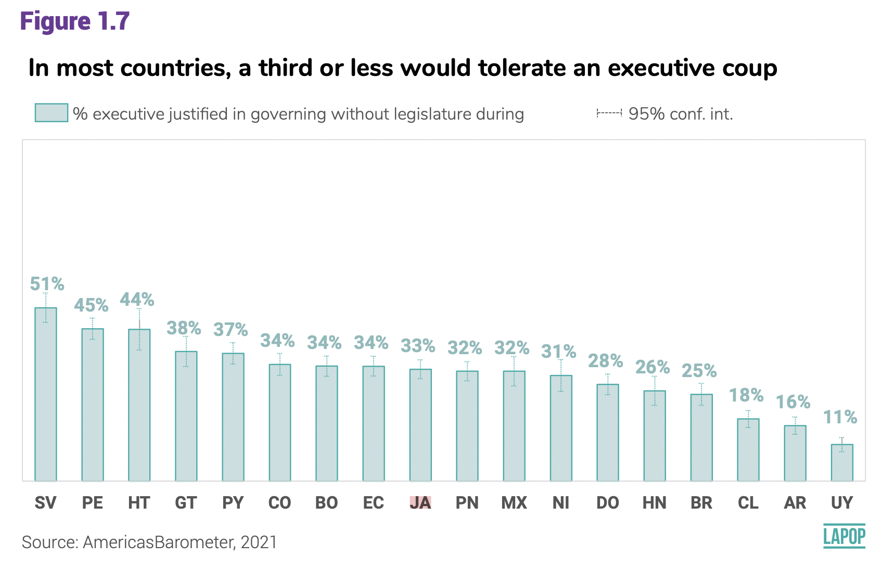

Introduction
In this section we will see how to construct confidence intervals of
the mean using the data from the AmericasBarometer. For that, we will
use the 2021 regional report “The Pulse of Democracy”, available here
and the 2018/19 report, available here.
The 2021 round reports data on executive coups. Figure 1.7 shows the
percentage of citizens that tolerates an executive coup by country. In
both cases, results include descriptive estimators and confidence
intervals. The 2018/19 round of the AmericasBarometer reports data on
social networks and political attitudes. In particular, Figure 3.9
reports the degree of satisfaction with democracy by type of user of
social networks.
About the dataset
The data we are going to use should be cited as follows: Source:
AmericasBarometer by the Latin American Public Opinion Project (LAPOP),
wwww.LapopSurveys.org. This document loads a trimmed database. This
database is hosted in the “materials_edu” repository of the LAPOP
account on GitHub. It is recommended to clean the Environment before
proceeding with this section.
Using the library rio and the command
import, we can import this database from this repository.
In addition, the data from countries with codes less than or equal to 35
are selected, that is, the observations of the United States and Canada
are eliminated.
library(rio)
lapop18 = import("https://raw.github.com/lapop-central/materials_edu/main/LAPOP_AB_Merge_2018_v1.0.sav")
lapop18 = subset(lapop18, pais<=35)
We also upload the dataset for the 2021 round.
lapop21 = import("https://raw.github.com/lapop-central/materials_edu/main/lapop21.RData")
lapop21 = subset(lapop21, pais<=35)
Tolerance to executive coups
Figure 1.7 of the report The Pulse of Democracy for the 2021 round of
the AmericasBarometer shows the results of the percentage of citizens
that tolerates an executive coup by country. This graph also displays
the 95% confidence interval for each country.

The variable used in this figure is “jc15a”. Its wording is: “Do you
believe that when the country is facing very difficult times, it is
justifiable for the president of the country to close the Congress and
govern without Congress?” The options are:
Yes, it is justified
No, it is not justified
Describing tolerance to executive coups
To calculate the percentage of citizens that justify or tolerate an
executive coup, we have to recode this variable in a way that those who
justify have a value of 100 and those who do not justify have a value of
0. In this case, we use the command recode and we tabulate
with table to verify the recodification.
lapop21$jc15ar = car::recode(lapop21$jc15a, "1=100; 2=0")
table(lapop21$jc15ar)
##
## 0 100
## 14711 5908
To calculate the percentsage of citizens who tolerate an executive
coup we can use the command table and
prop.table. The new variable “jc15ar” is a dummy variable.
With this type of variable, the mean is the proportion of responses with
100. It means that if we calculate the mean of this variable, the
results is the percentage for all respondents. In this section we
proceed as this variable is numeric. In strict sense, this is a
categorical nominal variable. The calculation of standard deviations and
confidence intervals are then referential.
The result indicates that the percentage of citizens that tolerates
an executive coup is 28.7% for the whole sample.
summary(lapop21$jc15ar)
## Min. 1st Qu. Median Mean 3rd Qu. Max. NA's
## 0.00 0.00 0.00 28.65 100.00 100.00 40042
Confidence intervals for tolerance to executive coups
To calculate the 95% confidence interval of this percentage, we can
use the command t.test or the library lsr that
has the command ciMean.
t.test(lapop21$jc15ar)
##
## One Sample t-test
##
## data: lapop21$jc15ar
## t = 90.996, df = 20618, p-value < 2.2e-16
## alternative hypothesis: true mean is not equal to 0
## 95 percent confidence interval:
## 28.03599 29.27038
## sample estimates:
## mean of x
## 28.65318
library(lsr)
ciMean(as.numeric(lapop21$jc15ar), na.rm = T)
## 2.5% 97.5%
## [1,] 28.03599 29.27038
Tolerance to executive coups by country
Figure 1.7 shows the percentage of citizens that tolerates an
executive coup by country To replicate this results, we have to define
the variable “pais” as factor. We saved this change in a new variable
“paises” that we label with the initials of each country.
lapop21$paises = as.factor(lapop21$pais)
levels(lapop21$paises) <- c("MX", "GT", "SV", "HN", "NI", "CR",
"PN", "CO", "EC", "BO", "PE",
"PY", "CL", "UY", "BR", "AR", "DO",
"HT", "JA", "GU")
table(lapop21$paises)
##
## MX GT SV HN NI CR PN CO EC BO PE PY CL UY BR AR
## 2998 3000 3245 2999 2997 2977 3183 3003 3005 3002 3038 3004 2954 3009 3016 3011
## DO HT JA GU
## 3000 3088 3121 3011
To calculate these percentages by country, we can use several
alternatives. For example, the command tapply allows to
calculate the mean of a variable by groups of other variable.
tapply(lapop21$jc15ar, lapop21$paises, mean, na.rm=T)
## MX GT SV HN NI CR PN CO
## 30.312500 36.687307 48.068670 22.660819 31.111111 NaN 28.962444 35.041447
## EC BO PE PY CL UY BR AR
## 31.944444 32.082414 43.805613 34.459459 16.544118 8.552632 23.862069 13.795620
## DO HT JA GU
## 25.495959 44.042553 30.583215 NaN
Other way is to ude the library plyr and
dplyr that include the command ddply. This
command requires a definition of a dataframe “lapop21”, the grouping
variable “paises”, and then the functions to calculate in each group,
“mean” and “sd”.
library(plyr)
library(dplyr)
ddply(lapop21, "paises", summarise, mean=mean(jc15ar, na.rm=T), sd=sd(jc15ar, na.rm=T))
As we observe in the table, there is no data for Costa Rica, nor
Guyana. With the standard deviation, we can calculate the lower and
upper limits of the confidence interval.
We can do this directly with the library Rmisc. This
library has the command group.CI that calculates the mean,
the upper limit and the lower limit of a variable by groups of other
variable. This table is saved in an object “coup”. This command does not
include rows of countries with no data, so there are no rows for Costa
Rica and Guyana.
library(Rmisc)
coup = group.CI(jc15ar~paises, lapop21)
coup
With this table, we can replicate Figure 1.7 with the library
ggplot. In a previous section, we produce a bar graph by
country, specifying variables in axis with aes and using
geom_bar(…). Now, we want to add confidence intervals. For
this, we add a new layer with the specification
geom_errorbar(…). This specification requires a new
aes where we have to specify a “ymin” and a “ymax” of the
confidence interval. The table “coup” has the information for “ymin” in
the column “jc15ar.lower” and the information for “ymax” in the column
“jc15ar.upper”.
We also have options like width to specify the width of
the whiskers of the error bars, color to specify the color
of error bars, cex to specify the width of lines and
linetype to specify the type of line, in this case dashed
lines.
library(ggplot2)
fig1.7 = ggplot(coup, aes(x=reorder(paises, -jc15ar.mean), y=jc15ar.mean))+
geom_bar(width=0.5, fill="darkslategray3", colour="#69b3a2", stat="identity")+
geom_errorbar(aes(ymin=jc15ar.lower, ymax=jc15ar.upper), width=0.4,
color="darkcyan", cex=0.4, linetype=3)+
geom_text(aes(label=paste(round(jc15ar.mean, 1), "%")), vjust=-4.4, size=2.5)+
xlab("Country") + ylab("Tolerance to executive coups (%)")+
ylim(0, 60)
fig1.7

These results, however, are not equal to those presented in Figure
1.7. This is due to the fact that these calculations do not include
survey weights. Below, we will show how to include survey weights in
calculations to replicate this figure.
Describing of satisfaction with democracy
Figure 3.9 presents the percentage of respondents who are satisfied
with democracy by type of social network user.

The variable satisfaction with democracy is called “pn4” and is coded
as follows:
- Very satisfied
- Satisfied
- Dissatisfied
- Very dissatisfied
Footnote 21 indicates that “Interviewees who select (1) or (2) are
coded as satisfied with democracy.” Therefore, this variable has to be
recoded. In this case, the command recode is used and
tabulated, via table, to verify the recoding.
library(car)
table(lapop18$pn4)
##
## 1 2 3 4
## 1727 8916 12455 3855
lapop18$pn4rr = car::recode(lapop18$pn4, "1:2=100; 3:4=0")
table(lapop18$pn4rr)
##
## 0 100
## 16310 10643
The new variable “pn4rr” is a dummy variable. In this type of
variables, the mean corresponds to the proportion of responses of 100.
That is, if we calculate the mean of this variable, we are calculating
the percentage for all the interviewees. In this section we will treat
this variable as if it were a numeric variable. Strictly speaking, it is
a nominal categorical variable. The calculations of standard deviations
and then of confidence intervals, therefore, are referential.
summary(lapop18$pn4rr)
## Min. 1st Qu. Median Mean 3rd Qu. Max. NA's
## 0.00 0.00 0.00 39.49 100.00 100.00 1089
These results show an average of 39.5, that is, 39.5% of those
interviewed are satisfied with democracy. We can also calculate the
confidence interval for this variable in several ways. A first way is by
performing a one-sample t-test, using the command t.test.
Other way is using the command ciMean from the library
lsr.
t.test(lapop18$pn4rr)
##
## One Sample t-test
##
## data: lapop18$pn4rr
## t = 132.62, df = 26952, p-value < 2.2e-16
## alternative hypothesis: true mean is not equal to 0
## 95 percent confidence interval:
## 38.90364 40.07087
## sample estimates:
## mean of x
## 39.48726
library(lsr)
ciMean(lapop18$pn4rr, na.rm=T)
## 2.5% 97.5%
## [1,] 38.90364 40.07087
These results indicate that the 95% confidence interval of the mean
for satisfaction with democracy varies between 38.9% and 40.1% . We
could change this default value to 99% confidence by adding the
specification conf = 0.99 to the command
ciMean.
Satisfaction with democracy by groups of consumption of information
in social networks
The 2018/19 report uses a variable that measures “frequent exposure
to political information.” This variable is constructed in a complex
way, based on the 3 social networks. In this case we are going to start
with a simpler recoding to recreate the confidence intervals of the
variable “satisfaction with democracy” by groups of consumption of
information in each social network. Later the variable used in the
report will be replicated. The frequency of information consumption
(variables “smedia2” for Facebook, “smedia5” for Twitter and “smedia8”
for WhatsApp) of each social network is measured on the following
scale:
- Daily
- A few times a week
- A few times a month
- A few times a year
- Never
We are going to recode these variables in such a way that those who
respond daily or a few times a week will be classified as “high use”,
those who respond from 3 to 4 will be classified as “low use” and those
who respond “never”. they will be classified as “non-users”. A similar
classification scheme is used to define the users of the 3 social
networks. The new recoded variables are converted to a factor and
labeled.
table(lapop18$smedia2)
##
## 1 2 3 4 5
## 8633 4927 1286 282 231
table(lapop18$smedia5)
##
## 1 2 3 4 5
## 795 728 422 193 220
table(lapop18$smedia8)
##
## 1 2 3 4 5
## 14151 2646 495 50 87
lapop18$smedia2r = car::recode(lapop18$smedia2, "1:2=1; 3:4=2; 5=3")
lapop18$smedia5r = car::recode(lapop18$smedia5, "1:2=1; 3:4=2; 5=3")
lapop18$smedia8r = car::recode(lapop18$smedia8, "1:2=1; 3:4=2; 5=3")
lapop18$smedia2r = as.factor(lapop18$smedia2r)
lapop18$smedia5r = as.factor(lapop18$smedia5r)
lapop18$smedia8r = as.factor(lapop18$smedia8r)
levels(lapop18$smedia2r) = c("High use", "Low use", "Non user")
levels(lapop18$smedia5r) = c("High use", "Low use", "Non user")
levels(lapop18$smedia8r) = c("High use", "Low use", "Non user")
table(lapop18$smedia2r)
##
## High use Low use Non user
## 13560 1568 231
table(lapop18$smedia5r)
##
## High use Low use Non user
## 1523 615 220
table(lapop18$smedia8r)
##
## High use Low use Non user
## 16797 545 87
With these recoded variables, it is possible to calculate the mean
(which are the percentages) of satisfaction with democracy for each
group of information consumption in social networks. This can be done in
multiple ways. If you want to compare the means, you can use the command
tapply.
tapply(lapop18$pn4rr, lapop18$smedia2r, mean, na.rm=T) #Facebook
## High use Low use Non user
## 37.55182 37.94466 40.74074
tapply(lapop18$pn4rr, lapop18$smedia5r, mean, na.rm=T) #Twitter
## High use Low use Non user
## 39.66777 37.37542 41.78404
tapply(lapop18$pn4rr, lapop18$smedia8r, mean, na.rm=T) #Whatsapp
## High use Low use Non user
## 37.39093 38.92100 43.37349
Other option that can display both the mean and the standard
deviation is through the library plyr and the command
ddply. The code for Facebook would be:
library(plyr)
ddply(lapop18, "smedia2r", summarise, mean=mean(pn4rr, na.rm=T), sd=sd(pn4rr, na.rm=T))
It is important to note that in this case we have not indicated that
internally we do not work with missing values (using the specification
filter(!is.na(wa_user))), so the table above presents a row
of NA, observations with no information of using of the social network,
where the average and the standard deviation of the variable
satisfaction with democracy are calculated. Finally, an option that
allows you to display many statistics for each group is
describeBy from the library psych. The code
for Twitter is:
library(psych)
describeBy(lapop18$pn4rr, group=lapop18$smedia5r)
##
## Descriptive statistics by group
## group: High use
## vars n mean sd median trimmed mad min max range skew kurtosis se
## X1 1 1505 39.67 48.94 0 37.1 0 0 100 100 0.42 -1.82 1.26
## ------------------------------------------------------------
## group: Low use
## vars n mean sd median trimmed mad min max range skew kurtosis se
## X1 1 602 37.38 48.42 0 34.23 0 0 100 100 0.52 -1.73 1.97
## ------------------------------------------------------------
## group: Non user
## vars n mean sd median trimmed mad min max range skew kurtosis se
## X1 1 213 41.78 49.44 0 39.77 0 0 100 100 0.33 -1.9 3.39
However, what interests us is to calculate the confidence intervals
for each group. Figure 3.9 of the report presents the mean of
satisfaction with democracy, shown as a point, and the confidence
intervals for each group, shown as a gray area with lower and upper
limits. The library Rmisc and the command
group.CI can be used to calculate the confidence intervals
of the variable satisfaction with democracy by groups of information
consumption on Facebook.
library(Rmisc)
group.CI(pn4rr~smedia2r, lapop18)
With these data, for example, the average satisfaction with democracy
among the group with high use of information on Facebook is 37.6%. The
lower limit of the confidence interval is 36.7% and the upper limit is
38.4%. With these data, a bar chart similar to 3.9 could be
replicated.
Satisfaction with democracy by groups of type of user of social
networks
So far, confidence intervals of satisfaction with democracy have been
created by type of Twitter user. The report aggregates the users of the
three social networks to identify three types of users: high-users,
low-users, and non-users of any social network. The way of recoding this
type of user of three social networks is based on several conditions. As
the report says: “We use the same coding as in the previous section, to
distinguish between those who frequentle use social media (those with
accounts that they access a few times a week or daily) and those who do
not use social networks frequently (those with accounts that they access
a few times a month or a few times a year). We also include non-users:
those who do not have any social network accounts (those who indicate
that they do not have an account on Facebook, Twitter or Whatsapp) and
those who have an account, but never use it” (p.81). We first identify
those who use each social network a few times a week or daily as 1 and
if they use each social network a few times a month or a few times a
year, as 0. For this we use the command ifelse. Then, we
add the values of each social network in a single variable, with values
between 0 and 3. The command rowSums is used, which allows
the horizontal sum of defined variables, in this case those at position
[, 89:91]. In this command, we use the specification
na.rm=T so that the sum does not take missing values into
account.
lapop18$sm2 = ifelse(lapop18$smedia2==1 | lapop18$smedia2==2, 1, 0)
lapop18$sm5 = ifelse(lapop18$smedia5==1 | lapop18$smedia5==2, 1, 0)
lapop18$sm8 = ifelse(lapop18$smedia8==1 | lapop18$smedia8==2, 1, 0)
lapop18$anyhi = rowSums(lapop18[,89:91], na.rm=T)
table(lapop18$anyhi)
##
## 0 1 2 3
## 9831 5811 11131 1269
Starting from this variable, a variable is created that aggregates
the three social networks, called “hi_lo_non”. First, this variable is
created as a vector of NAs. Values of 1, 2, 3 or NA are then imputed to
it, depending on the values of “anyhi” or the values of the social
network variables. A new variable of type factor is then created, with
identical values as “hi_lo_non” and is labeled. The definition of the
conditionality is worked through the square brackets [...].
In this way, the conditions are defined as follows:
The variable “hi_lo_non is equal to 1 if the variable anyhi is
greater than or equal to 1 (use daily or a few times a week) =
lapop18$hi_lo_non[lapop18$anyhi>=1] = 1
The variable “hi_lo_non is equal to 2 if the variable anyhi is
equal to 0 (use a few times a year or never) =
lapop18$hi_lo_non[lapop18$anyhi==0] = 2
The variable “hi_lo_non is equal to 3 if the variables of account
holding are equal to 2 (No) =
lapop18$hi_lo_non[lapop18$smedia1==2 & lapop18$smedia4==2 & lapop18$smedia7==2] = 3
The following coding rules follow the same logic of combining other
variables to impute the value 3 or NA.
lapop18$hi_lo_non = NA #create a vector with NAs#
lapop18$hi_lo_non[lapop18$anyhi>=1] = 1 #1 is coded for those who use a social network daily or a few times a week.#
lapop18$hi_lo_non[lapop18$anyhi==0] = 2 #Those who use a social network a few times a month and a year are coded as 2#
lapop18$hi_lo_non[lapop18$smedia1==2 & lapop18$smedia4==2 & lapop18$smedia7==2] = 3 #Those who do not have social networks are coded as 3#
lapop18$hi_lo_non[lapop18$smedia2==5 & lapop18$smedia5==5 & lapop18$smedia8==5] = 3 #Those who never use any social network are coded as 3#
lapop18$hi_lo_non[lapop18$pais==3 & (lapop18$smedia2==5 | lapop18$smedia5==5 | lapop18$smedia8==5)] = 3 #A particular code is applied to country 3#
lapop18$hi_lo_non[lapop18$pais==3 & (lapop18$smedia1==2 | lapop18$smedia4==2 | lapop18$smedia7==2)] = 3 #A particular code is applied to country 3#
lapop18$hilon = as.factor(lapop18$hi_lo_non)
levels(lapop18$hilon) = c("High use", "Low use", "Non user")
prop.table(table(lapop18$hilon))*100
##
## High use Low use Non user
## 64.941873 3.480494 31.577634
According to these data, 64.9% of those interviewed report a high use
of social networks, while, at the other extreme, there are 31.6% who do
not use any social network. These data differ slightly from those
reported in the Appendix to the report, available here,
where 65.34% of high use and 31.60% of non-users are reported. These
differences may be due to differences in the interpretation of the
coding rules from Stata to R.
In the same way that the graph of average satisfaction with democracy
by type of Twitter user was produced using ggplot, now the
same will be done but for the users of the three social networks,
variable “hilon”.
library(Rmisc)
satis.use = group.CI(pn4rr~hilon, lapop18)
library(ggplot2)
fig3.9 = ggplot(satis.use, aes(x=hilon, y=pn4rr.mean))+
geom_bar(width=0.5, fill="darkcyan", colour="black", stat="identity")+
geom_errorbar(aes(ymin=pn4rr.lower, ymax=pn4rr.upper), width=0.2)+
geom_text(aes(label=paste(round(pn4rr.mean, 1), "%")), vjust=-2.5, size=4)+
xlab("Type of social network user") + ylab("Satisfaction with democracy (%)")+
ylim(0, 50)
fig3.9
This graph would be a replication of the one presented in the report
(Figure 3.9 on page 62), with minor differences due to the encoding of
the resulting data.
Summary
In this section we have worked with a recoded dummy variable
(satisfaction with democracy), which can be used as a numerical variable
for calculating confidence intervals of proportions. With this variable,
the confidence interval of the mean has been calculated, which would be
that of the proportion of respondents who are satisfied with democracy.
Then, these variables have been described by groups of a factor variable
(consumption of political information). It has been presented how to
calculate the confidence intervals of the numerical variable by groups
of the factor variable. Finally, it has been presented how to plot the
confidence intervals by groups.
Calculations including survey weights
Other way to calculate the confidence interval, including the survey
weight, is by using the library survey and the command
confint along with the native command
svymean.
library(survey)
design18 = svydesign(ids = ~upm, strata = ~estratopri, weights = ~weight1500, nest=TRUE, data=lapop18)
In the same way as in the previous section, the satisfaction with
democracy variable can be described by incorporating survey weights
using the command svymean.
svymean(~pn4rr, design18, na.rm=T)
## mean SE
## pn4rr 39.459 0.3317
To calculate the confidence interval, the above code has to be nested
inside the command confint. This command calculates the 95%
confidence interval by default. You could change this default value to
99% confidence by adding the conf = 0.99 specification to
the command.
confint(svymean(~pn4rr, design18, na.rm=T))
## 2.5 % 97.5 %
## pn4rr 38.80884 40.10901
The mean and confidence interval of satisfaction with democracy can
also be calculated incorporating the survey weight using the command
svyby. Within this command, the numerical variable to be
described (~pn4rr), the variable that forms the groups
(~smedia5r), the sample design (design18), the
function to be calculated ( svymean), that does not take
into account missing values (na.rm=T) and the confidence
interval of each group (vartype="ci") are defined.
tw.uso.weighted <- svyby(~pn4rr, ~smedia5r, design18, svymean, na.rm=T, vartype = "ci")
tw.uso.weighted
To be able to plot, these calculations are saved in a
“tw.uso.weighted” dataframe, which includes the mean data for each group
and the lower and upper limit of the confidence interval. In the same
way as with data that does not include the survey effect, the library
ggplot is used and a plot is created which is saved in a
“graf2” object. Very similar specifications to the previous examples are
used.
graf2 <- ggplot(tw.uso.weighted, aes(x=smedia5r, y=pn4rr))+
geom_bar(width=0.5, fill="darkcyan", colour="black", stat="identity")+
geom_errorbar(aes(ymin=ci_l, ymax=ci_u), width=0.2)+
geom_text(aes(label=paste(round(pn4rr, 1), "%")), vjust=-4.2, size=4)+
xlab("Twitter user type") + ylab("Satisfaction with democracy (%)")+
ylim(0, 50)
graf2
